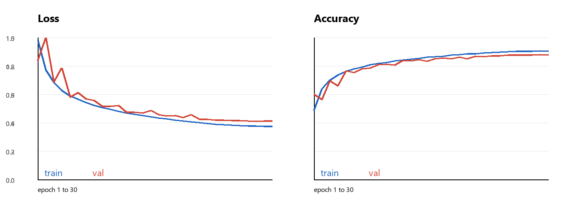
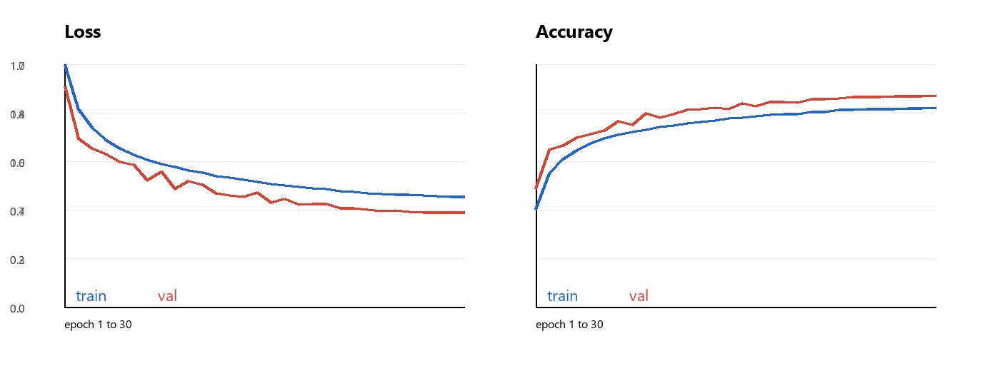
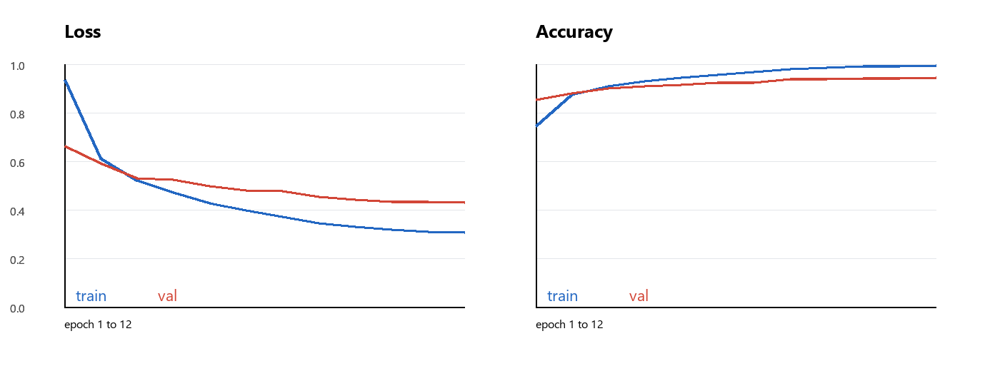
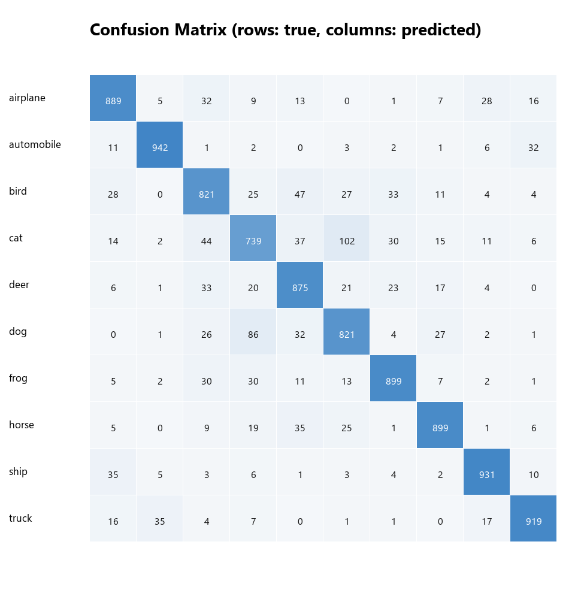
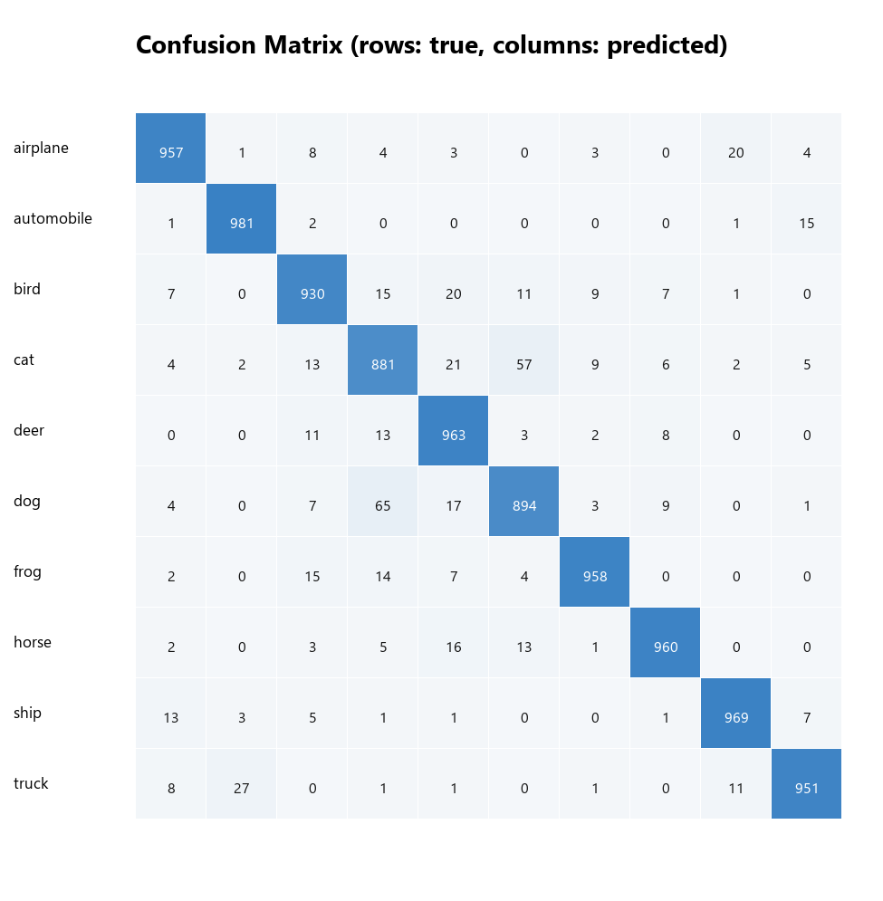
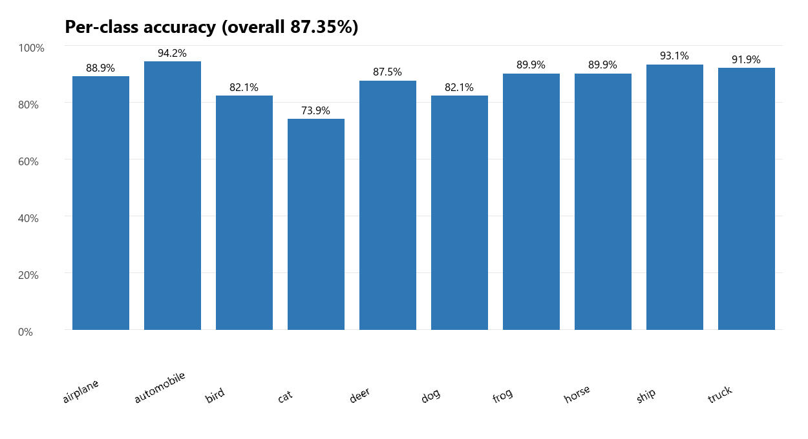
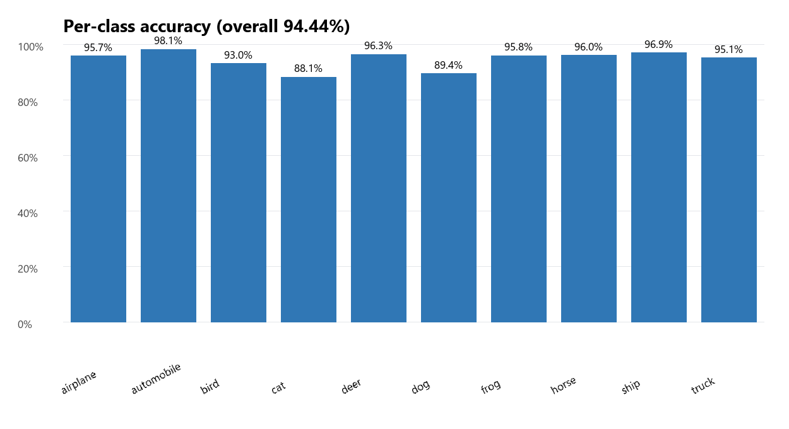
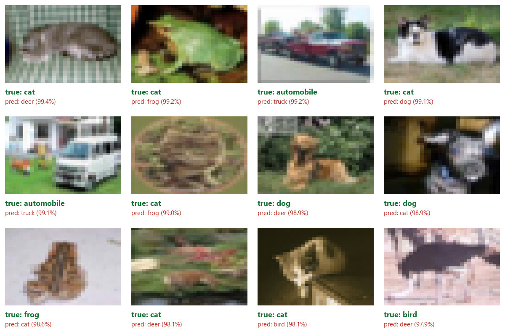
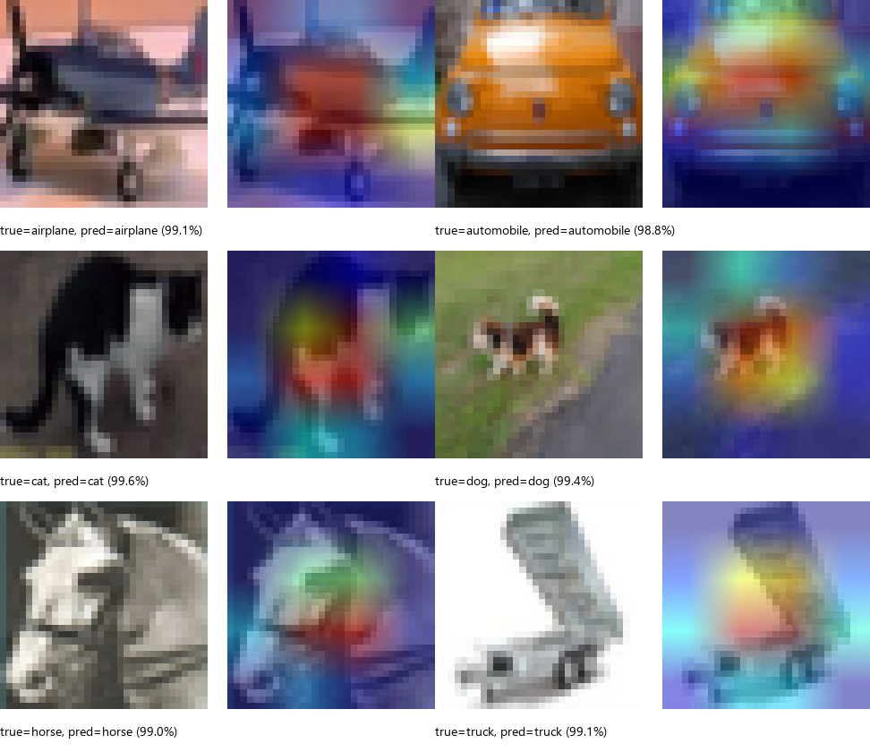

CIFAR-10 图像分类 · 实验结果
自建 CNN vs 强增强 vs 预训练 ResNet18 ｜ 45,000 训练 / 5,000 验证 / 10,000 测试 ｜ seed=42 ｜ RTX 4060 Laptop
| 模型 | 增强 | 轮数 | 验证准确率 | 测试准确率 | 训练耗时 |
|---|
| 自建 CNN | 基础（裁剪+翻转） | 30 | 88.12% | 87.35% | 12.1 min |
| 自建 CNN | 强（+RandAugment+RandomErasing） | 30 | 87.12% | 86.54% | 24.1 min |
| ResNet18（预训练微调） | 基础 | 12 | 94.48% | 94.44% | 6.6 min |
训练曲线

自建 CNN · 基础增强

自建 CNN · 强增强

ResNet18 · 预训练微调
混淆矩阵

自建 CNN · 基础增强

ResNet18 · 预训练微调
每类准确率

自建 CNN

ResNet18
误分类样本 / Grad-CAM

自建 CNN 的典型错例

ResNet18 · Grad-CAM 关注区域
数据来自 logs/*.json，图来自 results/*.png；三组正式训练合计 42.85 分钟。报告：report/report.md